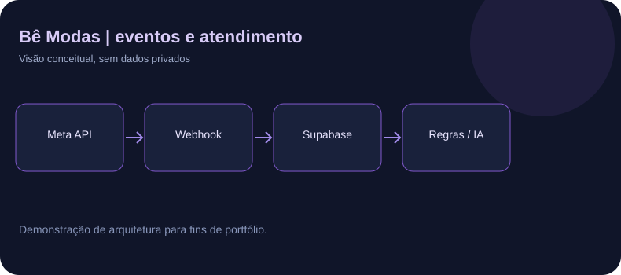

01Sistema comercial
AUTOMAÇÃO · WHATSAPP BUSINESS API
Bê Modas + atendimento com IA
Plataforma de varejo com integrações da API da Meta, webhook, filas, regras operacionais, atendimento automatizado e encaminhamento humano.
Ver estudo de casoDesenvolvimento web, integrações e automações com inteligência artificial. Transformo necessidades reais em fluxos digitais, com atenção a testes, segurança e melhoria contínua.
Aplicações com problemas, decisões técnicas e evidências que podem ser discutidas em entrevista.
Plataforma de varejo com integrações da API da Meta, webhook, filas, regras operacionais, atendimento automatizado e encaminhamento humano.
Ver estudo de casoPortal para consulta de compras e crediário, com autenticação, regras de acesso por usuário, atualização de dados e testes documentados.
Ver estudo de casoSite responsivo com navegação acessível, carrosséis, formulário de triagem e contato por WhatsApp.
Uma visão simplificada da arquitetura de integração com WhatsApp e IA, baseada no projeto Bê Modas.
O backend recebe eventos de mensagens, valida informações e aplica regras de atendimento. Dependendo do contexto, a resposta pode ser automatizada ou encaminhada à equipe.

Veja um exemplo fictício e ilustrativo de como uma mensagem pode atravessar as etapas do atendimento. Esta demonstração roda só no navegador e não chama a Meta, a OpenAI ou o Supabase.
Esta simulação não comprova disponibilidade do sistema de produção.
Sou estudante do curso técnico de Desenvolvimento de Sistemas, com conclusão prevista para março de 2028. Desenvolvo soluções digitais orientadas às necessidades de empresas, especialmente em web, automações e inteligência artificial.
Minha atuação inclui levantamento de requisitos, desenho de fluxos, configuração de integrações, testes e investigação de falhas. Uso ferramentas de IA generativa para apoiar a programação e parte significativa do código destes projetos foi produzida com essa assistência. Busco ampliar continuamente minha autonomia técnica.
Entrar em contato